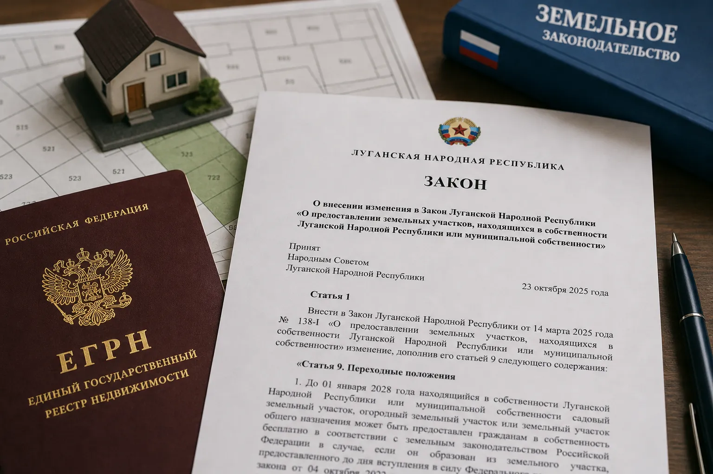

Бесплатное оформление земли в ЛНР: что это меняет для владельцев домов

Ключевое: в ЛНР введен упрощенный порядок оформления земельных участков под жилыми домами. Участок может быть передан в собственность бесплатно. Но это не автоматическое получение земли - результат полностью зависит от состояния документов на дом и участок.
Что изменилось
В законодательство внесены изменения, позволяющие гражданам оформить в собственность земельные участки, находящиеся в государственной или муниципальной собственности, если на них уже расположен жилой дом.
Право распространяется на объекты с документами как украинского образца, оформленными до вхождения ЛНР в состав России, так и российскими.
Если дом находится в долевой собственности, участок также оформляется в общую долевую собственность.
Переходный порядок действует до 1 января 2028 года.
Как проходит процедура
Для оформления необходимо подать заявление в местную администрацию или через МФЦ. К заявлению прикладываются документы на дом и участок, включая выписки из ЕГРН.
Если часть документов отсутствует, уполномоченный орган может запросить их самостоятельно, но это увеличивает сроки рассмотрения.
Решение по заявлению принимается в срок до 6 месяцев.
После положительного решения участок оформляется в собственность заявителя.
Практически важный момент
Если границы участка уже внесены в ЕГРН, дополнительное межевание и уточнение границ не требуется.
Если границы не определены, возможны дополнительные процедуры и задержки.
Что это означает на практике
Основной смысл изменений - не раздача земли, а легализация фактического пользования.
В регионе сохраняется большое количество объектов, где:
— дом существует и используется — документы есть, но разрозненные — право не внесено в ЕГРН — участок используется фактически, но не оформлен
Новая норма позволяет закрыть эти случаи, но только при активных действиях собственника.
Главное ограничение
Земля не оформляется отдельно от дома.
Если с домом есть проблемы - отсутствует регистрация в ЕГРН, не оформлено наследство, есть споры или расхождения в документах - именно это станет ключевым препятствием.
Поэтому главный вопрос - не "как получить землю", а "в каком состоянии находится дом".
Подробно: Регистрация недвижимости в ЛНР
Кто столкнется с трудностями
На практике сложности возникают у:
— владельцев со старыми украинскими документами — наследственных объектов — домов в долевой собственности — объектов без регистрации в ЕГРН — участков без кадастрового учета
В этих случаях оформление земли превращается в последовательное решение нескольких юридических задач.
Почему важно не затягивать
Формально срок действует до 2028 года, но откладывать нецелесообразно.
Если документы в порядке, оформление пройдет относительно быстро. Если нет - потребуется время на восстановление документов, оформление наследства и устранение расхождений.
Чем ближе к окончанию переходного периода, тем выше нагрузка на органы и тем больше риск задержек.
Связь с рисками по недвижимости
Оформление земли напрямую связано с общей проблемой регистрации прав.
Если объект не внесен в ЕГРН, в будущем возможны сложности при продаже, наследовании и юридических спорах.
Подробно: Бесхозное жилье Сроки и риски
Главный вывод
Новая норма - это инструмент, а не решение.
Она дает возможность оформить землю бесплатно, но не заменяет необходимость привести в порядок документы на дом.
Ключевой шаг - проверить статус дома и участка в ЕГРН, привести документы в порядок и только после этого переходить к оформлению.